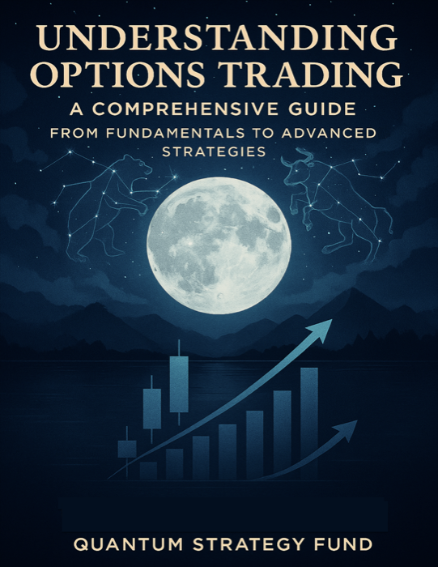

Short term
Trading noise
Price action is often dominated by high-frequency systems and rapidly changing liquidity.
Quantum-Inspired Asset Management
Quantum Strategy Fund applies quantum-inspired thinking to the market horizon between short-term trading noise and long-term macroeconomic trends.
Founded in 2020 Three strategy tiers Investor-focused research
Our Story
Quantum Strategy Fund was founded by a team of physicists and mathematicians shortly before the 2020 pandemic escalated. We recognized that medium-term market behavior often defies explanation by classical models.
Short-term price action is typically driven by high-frequency trading algorithms, while long-term trends tend to follow macroeconomic forces. Neither framework effectively captures the middle ground, where retail investor behavior can have an outsized influence. We developed a framework grounded in quantum mechanics to navigate and study medium-term asset pricing.
That framework informs our work in signal detection, portfolio optimization, and risk analysis. As the models have developed, we have expanded the fund to serve investors with different objectives and risk profiles.
Review our strategy tiersWhy Quantum?
Quantum Strategy Fund was built on a genuine love for quantum mechanics and a belief that its principles can change the way we understand markets. It is both an investment framework and a platform for curiosity, learning, and discovery.
Short term
Price action is often dominated by high-frequency systems and rapidly changing liquidity.
Medium term
Retail sentiment, collective behavior, and shifts in risk appetite create a complex, adaptive environment.
Long term
Economic cycles and broad fundamental trends tend to become the prevailing influence.
Instead of assuming one fixed outcome, quantum-inspired models can account for multiple possibilities and overlapping scenarios. Our most advanced models remain proprietary, but we believe the foundations of quantum thinking should be approachable. Through resources and direct conversations, we aim to help investors think differently about risk, opportunity, and market behavior.
Strategy Tiers
Each tier applies the fund’s research framework with a different balance of growth objectives, active positioning, and tolerance for drawdowns.
Designed for investors seeking steadier growth with controlled drawdowns.
Built for aggressive growth with active rebalancing and a higher tolerance for volatility.
Designed for investors who understand and accept the potential for substantial volatility and loss.
In development: an income-focused tier for investors seeking weekly or monthly distributions with a stable-growth objective.
Fund Development
A timeline of strategy launches and performance milestones as previously reported by the fund.
Performance
The interactive chart is temporarily unavailable. Recent data is shown in the table below when available.
| Series | Latest return | As of |
|---|
QSF strategy history is management-reported through September 2025 and is not live. Public benchmarks are best-effort, may be delayed beyond 15 minutes, and retain separate as-of times.
QSF strategy figures are management-reported and have not been independently verified on this website; fee and distribution treatment should be confirmed in fund documentation. Past performance is not indicative of future results. All investing involves risk, including the possible loss of principal.

Education & Insights
Learn foundational and advanced options strategies from the Quantum Strategy Fund team. Written with clarity and tested with data, the book also introduces quantum finance and strategy concepts.
Investor Network
Join our investor network for research briefings, fund updates, and early access to investment opportunities.
Request accessContact
Ready to take the next step? Contact the fund to discuss investor access and learn more about the available strategy tiers.